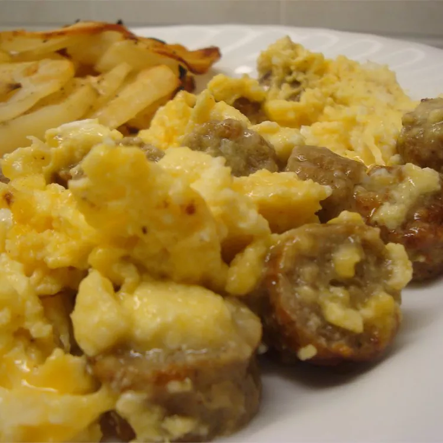

Scrambled Eggs with Cheese and Sausage

Ingredients
- 6 links pork sausage
- 6 large eggs
- ¾ cup milk
- ¾ cup shredded sharp Cheddar cheese
Steps
- Place sausage in a large, deep skillet. Cook over medium-high heat until evenly brown. Drain and chop into bite-sized pieces; set aside.
- While sausage is cooking, beat eggs and milk together. Pour eggs into a griddle. Add cheese and cook until eggs are set. Stir in sausage and serve warm.
- Enjoy
Home